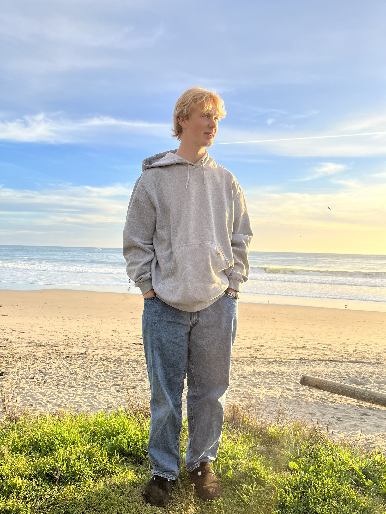

Hello! I'm Ryan, a senior at UC San Diego studying Data Science. Math and computers were always my thing growing up, and I started writing actual code at 17. The defining moment came a bit earlier though. As a teenager I saw an one of those early AI demos, a genetic algorithm, and I remember being in complete disbelief at what came out the other side. That feeling has driven a lot of what I do since: a deep curiosity for hard, novel problems, and the belief that computing is going to shape the next century in ways we can't fully imagine yet.
What I love most about data science is the versatility. Sitting with a messy problem and producing an actionable answer that didn't exist before. Providing answers for people that they couldnt have obtained otherwise. The feeling of clearing a path through the decision space by squeezing every last drop of signal out of data. Its a feeling you cant get anywhere else. The fields I keep gravitating toward are AI and the work behind teaching machines to think, healthcare and drug discovery (my latest project trains a multiclass tumor classifier directly on RNA-Seq gene expression data), and the space industry, where rapid iteration and infrastructure-scale problems feel like some of the most important challenges of our time. In my career, I hope to wake up every day and help with a difficult problem alongside like-minded people who want to build a better future.
Outside of school, I volunteer with the Humanitarian OpenStreetMap Team contributing maps for disaster-impacted regions, I follow markets closely, and I lift, cook, and travel whenever I get the chance. I love talking about nerdy stuff with my friends. Right now were planning a niche local social event for strangers! Stick around to find out more! When back home in Central Oregon, I always try to maximize my time outdoors. I go fly fishing, hike mountains, golf, play with my awesome dogs Slinky and Stanley. This last summer I built a huge 14x14ft deck for my neighbors dream house in the 100 degree heat, quite a challenge. I also climbed the South Sister with my brother. 5000 feet elevation gain and 13 miles round trip. Very fun! Need to find a bigger mountain next time.
